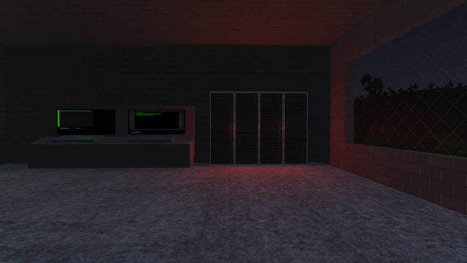
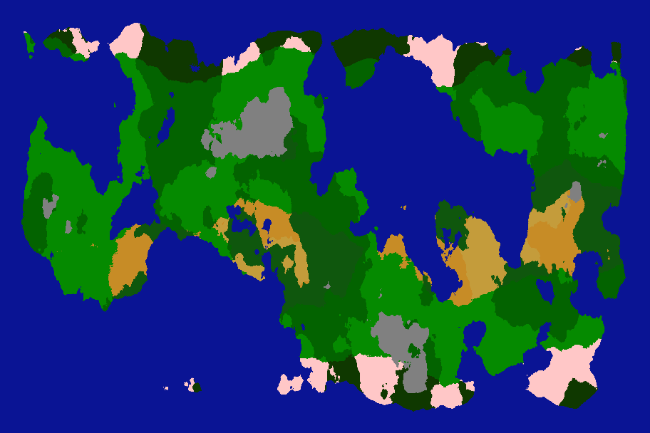
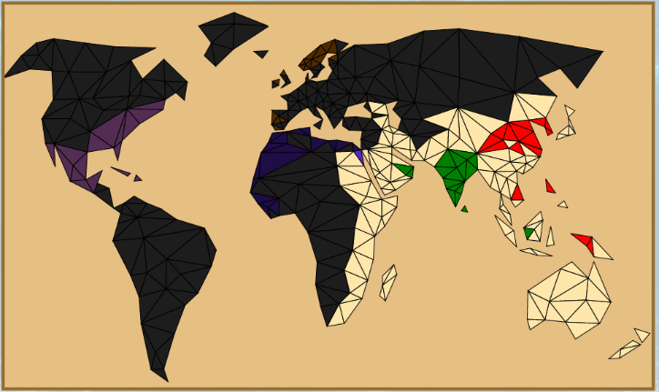
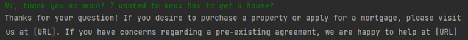

Jamie Gorman's Portfolio
Outline
Qualifications and Awards
Bachelors of Computer Science - First Class HonoursDavid Evans Memorial Prize for Technical Creativity
Pro Vice-Chancellor/Dean's Award
Computer Science A-Level - B
Mathematics A-Level - C
Physics A-Level - C
Extended Project Qualification A-Level - B
12 GCSEs
Notable Language Experience
C# (6 Years)C++ (3 Years)
Lua (2 Years)
Javascript (3 Years)
Python (3 Years)
Engines And LibrariesUnity EngineUnreal Engine 5 SDL2 LINQ |
MiscellaneousGitHTML CSS Game Modding |
Portfolio
Single Simulator
A parody of "Signal Simulator"-esque games - work as a new transfer to the signals department of an intergalatic dating website - matching up aliens on dates.
Juris-Civilis
An automatic world simulator with world generation and AI nations.
Pumpkin Panic

A player vs player survival minigame where two players fight back against a wave of evil pumpkins, while attempting to outscore or outlive their competitor.
(Gamejam Project)
Tauresium
A multiplayer online game website, inwhich players create custom nations and compete with one another to take over the world.
:C

A lightweight custom programming language designed to be simple yet expansive.
Bankbot
A basic chatbot AI using stackoverflow questions to categorise user inputs into various finance related topics.
Who am I?
Hey, my name is Jamie Gorman, I'm a software developer from Birmingham, England. I've been interested in software development since I was a child, starting with actionscript as my first language at the age of 12. Nowadays, I prefer to use languages like C#, C++ and Python, but I pride myself on my ability to work with any language.
In my free time, I like to make my own games and simulations, some of which are listed above! Aside from developing software, I also like to play video games (I have a personal preference for story-based games, metroidvanias and strategy games), play disc golf, play board games, and spend time with my boyfriend.